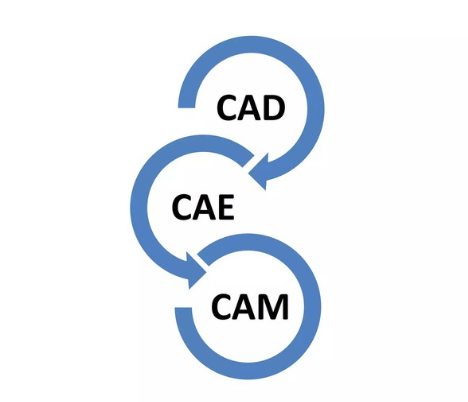
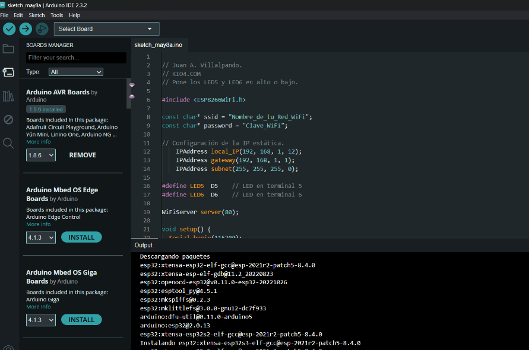

TALLER DE ELECTRÓNICA Y AVANCE DEL PROYECTO DE CERRADURA DE PUERTA SIN CONTACTO
SESIÓN 15 (07-05-2024)

Taller de electrónica es un entorno educativo donde los participantes pueden aprender sobre los
componentes electrónicos, circuitos, sistemas y tecnologías relacionadas a través de una
combinación de teoría y práctica.
La electrónica es una rama fundamental de la física que se centra en el estudio y la aplicación
de sistemas que manipulan el flujo de electrones u otras partículas cargadas eléctricamente.
Esta disciplina abarca una amplia gama de funciones, incluyendo el control, procesamiento y
distribución de información, así como la conversión y distribución de energía eléctrica. Estas
actividades involucran la creación y detección de campos electromagnéticos y corrientes
eléctricas. Por lo tanto, la electrónica se extiende a áreas específicas como el control
electrónico, las telecomunicaciones y la electrónica de potencia.
SESIÓN 16 (08-05-2024)

Una cerradura de puerta sin contacto es un tipo de cerradura que se abre y cierra sin necesidad
de contacto físico directo. Estas cerraduras utilizan diferentes tecnologías, como RFID
(Identificación por Radio Frecuencia), Bluetooth, códigos numéricos, reconocimiento facial o
huellas dactilares, para permitir el acceso a una puerta sin la necesidad de utilizar una llave
física. Realizamos en clase el proyecto del Arduino de cerradura de puerta sin contacto,
formulando los circuitos para conectarlo con la aplicación y así ir viendo cómo va el proceso
del Arduino, encontrando algunas dudas en el proceso pero logramos terminar con el armado.